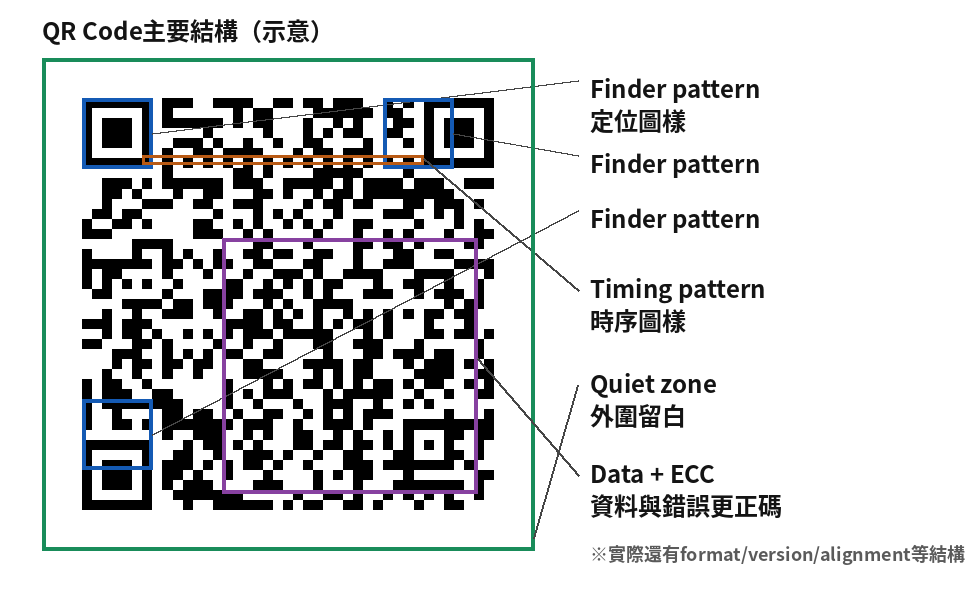
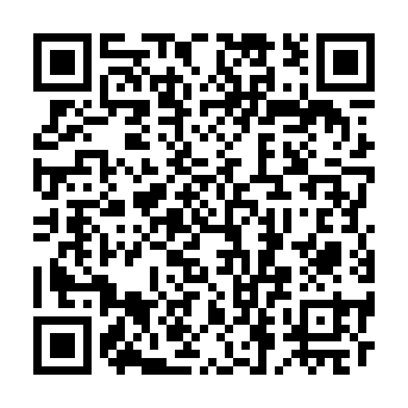
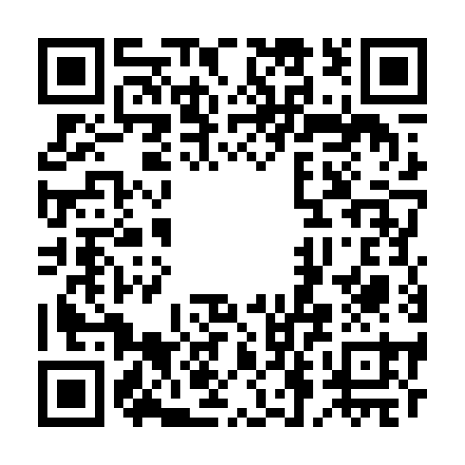
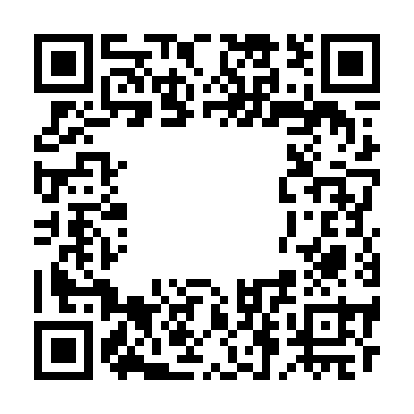
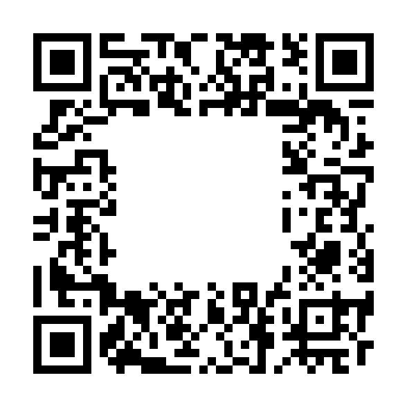

QR Code為什麼
缺一角還能掃？
關鍵不是手機很會猜，而是QR Code本身就預留了「修復資料」。
能掃到，要同時過兩關
先找到QR Code
Finder Pattern、Timing Pattern、Quiet Zone等結構，讓掃描器知道QR在哪裡、怎麼轉正、每個module在哪裡。
再把資料救回來
資料區裡除了原始內容，還有Reed-Solomon錯誤更正碼。部分資料壞掉時，可以靠冗餘資訊修復。
一堆黑白格，其實分工很細

Finder Pattern：找位置和方向
Timing / Alignment：建立與校正module網格
Format資訊：告訴解碼器ECC等級與mask
Data + ECC：真正的資料與修復資訊
Quiet Zone：讓QR和背景分開
手機不是直接「看黑白猜文字」
Reed-Solomon：先多存一些，壞掉時拿來補
原始資料
網址、文字、編號……
＋ 冗餘ECC
不是內容本身，但可以協助找回錯誤codewords
保護越強，能放的資料就越少
可復原codewords
常見使用等級
較強容錯
最高的一般等級
30% codewords ≠ 可以剪掉30%圖片
破損形狀
同樣面積，集中成一大塊和散落在各處，對codeword分布影響不同。
破損位置
遮資料區和遮Finder Pattern，不是同一件事。
讀取器實作
不同相機、演算法、影像品質也會影響最後能不能掃到。
我真的把QR Code遮掉再解碼

原始：成功
中央10%：成功
中央20%：成功
中央25%：失敗條件：Version 6、41×41 modules、ECC H、同一段payload；用OpenCV QRCodeDetector測試。這是一次實驗紀錄，不是規範保證值。
ECC越高，這次測試確實撐得更久
| ECC | 最大成功的中央白方塊 | 下一級測試 | 遮左上Finder |
|---|---|---|---|
| L | 5% | 8%失敗 | 失敗 |
| M | 12% | 15%失敗 | 失敗 |
| Q | 18% | 20%失敗 | 失敗 |
| H | 20% | 25%失敗 | 失敗 |
所以「缺一角」為什麼有時還能掃？
比較可能成功
✔ 主要傷到資料區
✔ Finder / Timing等還清楚
✔ Quiet Zone仍完整
✔ 錯誤codewords沒超過ECC能力
比較容易失敗
✕ Finder Pattern被整個破壞
✕ 外圍留白被裁掉或背景太亂
✕ QR太小、太糊、透視太嚴重
✕ 資料損壞超過可修復範圍
我怎麼從Wiki做到這份簡報？

重複loop：查詢Wiki→整理重點→事實檢查。只要說法衝突或過度簡化，就回到Wiki重新查；簡報生成後若出現絕對化敘述，也退回事實檢查。
最常出錯的節點：「把技術資料講簡單」
第一次整理時，我差點把「H級約30%可復原codewords」寫成「QR壞30%也能掃」。
我把檢查往前移
從「HTML做完再檢查」改成「Wiki摘要完成後先檢查術語，再生成簡報」。
我修改了graph
新增「codeword vs.圖片面積」專門檢查，並增加OpenCV實驗，用結果反查敘述是否太絕對。
這樣可以避免LLM把正確但複雜的規格，簡化成容易理解卻不正確的結論。